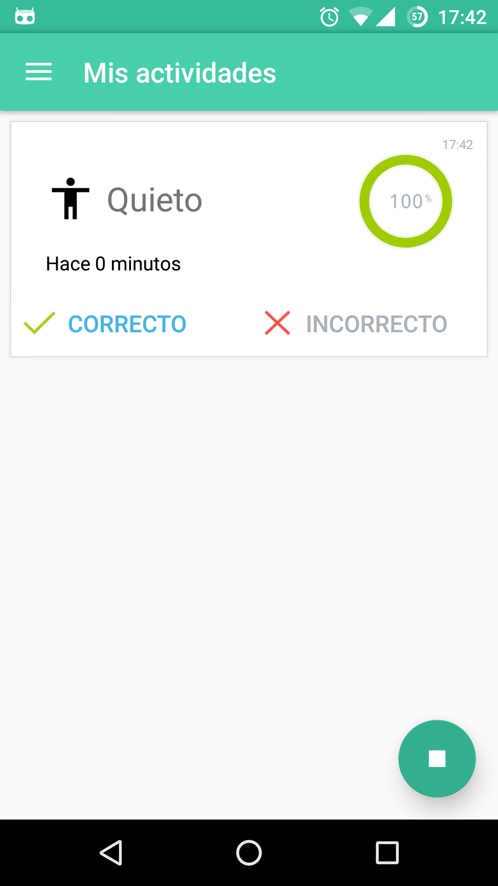
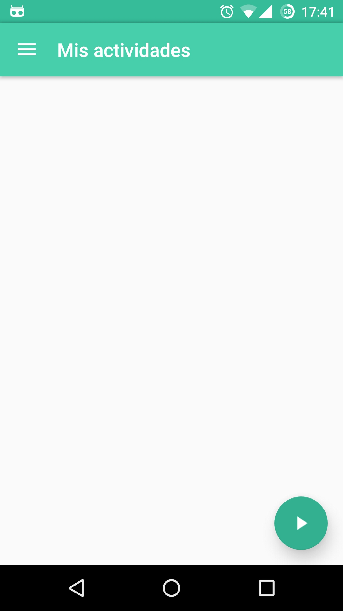

Configuración Adicional¶
Activar/Desactivar Servicio¶
Desde la barra de menú se puede activar y desactivar el servicio de reconocimiento. Presiona el botón de acción para elegir ambas opciones.
| Desactivar Servicio | Activar el Servicio | Servicio Activado |
|---|---|---|
|  |  |
{kind=link}
{kind=link}
{kind=link}
Configuración¶
Para acceder a la configuración desde la aplicación accedé al Menu > Configuración.

Acceso a la configuración
En esta actividad muestra el detalle de los datos enviados al servidor de encuesta además de las opciones de configuración como:

Configuración general
Correo y Edad¶
Para cambiar la configuración inicial del correo y edad accede las opciones.
| Cambiar correo | Cambiar edad |
|---|---|
 |
{kind=link}
{kind=link}
Sincronización de datos¶
Para cambiar la manera en que la aplicación envia los datos por WIFI o redes móviles accede a la opción.
| Acceso a Sincronizar | Cambiar Sincronizar |
|---|---|
 |
{kind=link}
Ayuda¶
Para acceder a esta página de ayuda desde la aplicación accedé al Menu > Ayuda.
{kind=link}